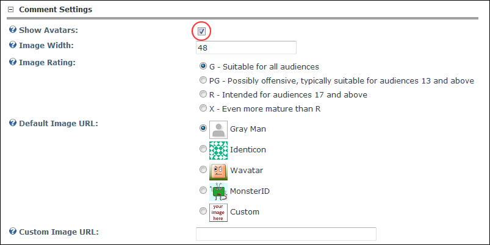

Managing Comment Avatars
How to enable or disable avatars to be displayed next to comments on the View_Blog module, as well as configure optional settings. The Blog module uses Gravatars (Globally Recognized Avatars) which enable you to choose avatars suitable for your audience. Visit http://www.gravatar.com for more details.
- Select
 Module Options from the View_Blog module actions menu.
Module Options from the View_Blog module actions menu.
- Go to the Comment Settings section.
- At Show Avatars, select from these options:
- to disable avatars. Skip to Step 4.
- to enable avatars. This displays these optional fields:
- In the Image Width text box, enter a pixel width for the avatar. The default setting of 48 is recommended if you are using the default style of the comments.
- At Image Rating, select from these options to set avatars appropriate for your audience:
- G: Suitable for all audiences
- PG: Possibly offensive, typically suitable for audiences 13 and above
- R: Intended for audiences 17 and above
- X: Even more mature than R
- At Default Image URL, select the images to be used for comments made by users without a Gravatar:
 Gray Man: Displayed as is for all users without a gravatar.
Gray Man: Displayed as is for all users without a gravatar. Identicon: Gravatar will be displayed for users who have one, otherwise, a unique identifying image will be created for them based on the IP address of their computer, or on their email address if provided.
Identicon: Gravatar will be displayed for users who have one, otherwise, a unique identifying image will be created for them based on the IP address of their computer, or on their email address if provided. Wavatar: As above.
Wavatar: As above. MonsterID: As above.
MonsterID: As above.- Custom: Enter a complete URL to the image. E.g. http://www.domain.com/myimage.jpg
- In the Custom Image URL, if Custom was selected at the above field, enter the URL here.
-
Click the Update button.

Enabling Comment Avatars